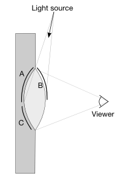

Please note: this article is part of the older "Objective-C era" on Cocoa with Love. I don't keep these articles up-to-date; please be wary of broken code or potentially out-of-date information. Read "A new era for Cocoa with Love" for more.
Drawing gloss gradients in CoreGraphics
This post presents a function &mdash DrawGlossGradient(CGContextRef context, NSColor *color, NSRect inRect) &mdash that will draw a "gloss" gradient in a single statement. All colors in the gradient are calculated from the single color parameter.
Introduction
The following samples are gloss gradients. They are all made by the DrawGlossGradient function described below.
This type of gradient is common on buttons or other graphical adornments on webpages. The "aqua" aesthetic of Mac OS X also uses this type of gradient in numerous places.
The gradient is actually composed of a number of components, all intended to simulate a translucent glass or plastic lens-shaped object that is lit from above.
A diagram of the physical structure being modelled would look like this:
The light gray "lens" shape is the glass or plastic translucent object being modelled.
The top half, as seen by the viewer, is dominated by the arc labelled "B" which is light from the light-source reflected directly to the viewer.
The bottom half, as seen by the viewer, contains the effects of two arcs: C and A. Arc C is a "caustic" highlight, where the light from the light source is focussed to a higher intensity by the lens shape of the translucent material. Arc A is darker because the recessed nature of the translucent material casts a shadow over this area.
The final point to note is that the lens shape is not flat at the back, so these light and dark components attenuate in a non-linear fashion.
Creating the effect in code
We need four different color values:
- The top of the gloss highlight (whitest due to incident angle of reflection)
- The bottom of the gloss highlight (white-ish but not as white as top)
- The background color - darkest visible part of shadow (will be provided as input to the function)
- The caustic color (brighter than background and incorporating a subtle hue change)
Once we have these values, we can simply create a gradient out of them.
I'm going to use a CoreGraphics CGShadingRef. It would be possible to produce a fairly similar effect using an NSGradient but that class only handles constant-slope gradients and I want to incorporate a subtle exponential in the gradients.
The gloss highlight color
The two gloss highlight colors will just be a blend of white and the background color. Picking relative intensities of these two colors is not very hard. I chose a 0.6 fraction of white for my top gloss color and a 0.2 for the bottom of the gloss (although these fractions will be reduced by the scaling below).
When using a range of background colors, I found that dark colors needed a smaller fraction of white than light colors to appear similarly glossy, so I had to scale the effect based on background brightness.
I chose the following function to produce a scaling coefficient for my gloss brightness, based on brightness of the background color:
float perceptualGlossFractionForColor(float *inputComponents)
{
const float REFLECTION_SCALE_NUMBER = 0.2;
const float NTSC_RED_FRACTION = 0.299;
const float NTSC_GREEN_FRACTION = 0.587;
const float NTSC_BLUE_FRACTION = 0.114;
float glossScale =
NTSC_RED_FRACTION * inputComponents[0] +
NTSC_GREEN_FRACTION * inputComponents[1] +
NTSC_BLUE_FRACTION * inputComponents[2];
glossScale = pow(glossScale, REFLECTION_SCALE_NUMBER);
return glossScale;
}The input components are 3 floats (RGB). The coefficients with which I multiply them are the NTSC color-to-luminance conversion coefficients. It's an acceptable "perceptual brightness" conversion for color and far easier than RGB to LUV. I then raise this value to a fractional power — value chosen experimentally as it seemed to give about the right final value across the range of brightnesses.
The caustic highlight color
The caustic color is a harder problem. We need to achieve a hue and brightness shift of the background color towards yellow, while retaining the background's saturation.
Again, as with gloss, there was a non-linearity to account for: colors further in hue from yellow required proportionally less hue shift to maintain the appearance of the same hue-shift effect. I chose to scale the hue shift by a cosine such that the hue shift seemed perceptually appropriate.
In addition, grays (having no real hue) need special handling. Reds needed special handling to account for the fact that hue wraps around at red. Purples didn't really look good hued towards yellow, so I decided to make them hue towards magenta.
void perceptualCausticColorForColor(float *inputComponents, float *outputComponents)
{
const float CAUSTIC_FRACTION = 0.60;
const float COSINE_ANGLE_SCALE = 1.4;
const float MIN_RED_THRESHOLD = 0.95;
const float MAX_BLUE_THRESHOLD = 0.7;
const float GRAYSCALE_CAUSTIC_SATURATION = 0.2;
NSColor *source =
[NSColor
colorWithCalibratedRed:inputComponents[0]
green:inputComponents[1]
blue:inputComponents[2]
alpha:inputComponents[3]];
float hue, saturation, brightness, alpha;
[source getHue:&hue saturation:&saturation brightness:&brightness alpha:&alpha];
float targetHue, targetSaturation, targetBrightness;
[[NSColor yellowColor] getHue:&targetHue saturation:&targetSaturation brightness:&targetBrightness alpha:&alpha];
if (saturation < 1e-3)
{
hue = targetHue;
saturation = GRAYSCALE_CAUSTIC_SATURATION;
}
if (hue > MIN_RED_THRESHOLD)
{
hue -= 1.0;
}
else if (hue > MAX_BLUE_THRESHOLD)
{
[[NSColor magentaColor] getHue:&targetHue saturation:&targetSaturation brightness:&targetBrightness alpha:&alpha];
}
float scaledCaustic = CAUSTIC_FRACTION * 0.5 * (1.0 + cos(COSINE_ANGLE_SCALE * M_PI * (hue - targetHue)));
NSColor *targetColor =
[NSColor
colorWithCalibratedHue:hue * (1.0 - scaledCaustic) + targetHue * scaledCaustic
saturation:saturation
brightness:brightness * (1.0 - scaledCaustic) + targetBrightness * scaledCaustic
alpha:inputComponents[3]];
[targetColor getComponents:outputComponents];
}So this function is really just an HSV conversion of the inputComponents and the yellowColor, and the blending of the two.
Composing into a single gradient
Now to assemble the colors into a gradient. We'll need to implement an interpolation function that will return the correct color for a given progress point in the gradient.
With the aforementioned "background color", "caustic color", "top gloss white fraction" and "bottom gloss white fraction" passed into this function as the "color", "caustic", "initialWhite" and "finalWhite" parameters of the GlossParameters struct, the function looks like this:
typedef struct
{
float color[4];
float caustic[4];
float expCoefficient;
float expScale;
float expOffset;
float initialWhite;
float finalWhite;
} GlossParameters;
static void glossInterpolation(void *info, const float *input,
float *output)
{
GlossParameters *params = (GlossParameters *)info;
float progress = *input;
if (progress < 0.5)
{
progress = progress * 2.0;
progress =
1.0 - params->expScale * (expf(progress * -params->expCoefficient) - params->expOffset);
float currentWhite = progress * (params->finalWhite - params->initialWhite) + params->initialWhite;
output[0] = params->color[0] * (1.0 - currentWhite) + currentWhite;
output[1] = params->color[1] * (1.0 - currentWhite) + currentWhite;
output[2] = params->color[2] * (1.0 - currentWhite) + currentWhite;
output[3] = params->color[3] * (1.0 - currentWhite) + currentWhite;
}
else
{
progress = (progress - 0.5) * 2.0;
progress = params->expScale *
(expf((1.0 - progress) * -params->expCoefficient) - params->expOffset);
output[0] = params->color[0] * (1.0 - progress) + params->caustic[0] * progress;
output[1] = params->color[1] * (1.0 - progress) + params->caustic[1] * progress;
output[2] = params->color[2] * (1.0 - progress) + params->caustic[2] * progress;
output[3] = params->color[3] * (1.0 - progress) + params->caustic[3] * progress;
}
}As you can see, the function is split into two halves: the first half handles the gloss and the second half handles the caustic. An exponential is used to create an attenuating effect on the gradient.
Draw the gradient
The draw function is pretty straightforward. Most of it is configuring the GlossParameters struct with the coefficient and offsets of the exponential, invoking the functions to generate the required colors and performing the mechanics of drawing a gradient using CGShadingCreateAxial and CGContextDrawShading.
void DrawGlossGradient(CGContextRef context, NSColor *color, NSRect inRect)
{
const float EXP_COEFFICIENT = 1.2;
const float REFLECTION_MAX = 0.60;
const float REFLECTION_MIN = 0.20;
GlossParameters params;
params.expCoefficient = EXP_COEFFICIENT;
params.expOffset = expf(-params.expCoefficient);
params.expScale = 1.0 / (1.0 - params.expOffset);
NSColor *source =
[color colorUsingColorSpaceName:NSCalibratedRGBColorSpace];
[source getComponents:params.color];
if ([source numberOfComponents] == 3)
{
params.color[3] = 1.0;
}
perceptualCausticColorForColor(params.color, params.caustic);
float glossScale = perceptualGlossFractionForColor(params.color);
params.initialWhite = glossScale * REFLECTION_MAX;
params.finalWhite = glossScale * REFLECTION_MIN;
static const float input_value_range[2] = {0, 1};
static const float output_value_ranges[8] = {0, 1, 0, 1, 0, 1, 0, 1};
CGFunctionCallbacks callbacks = {0, glossInterpolation, NULL};
CGFunctionRef gradientFunction = CGFunctionCreate(
(void *)¶ms,
1, // number of input values to the callback
input_value_range,
4, // number of components (r, g, b, a)
output_value_ranges,
&callbacks);
CGPoint startPoint = CGPointMake(NSMinX(inRect), NSMaxY(inRect));
CGPoint endPoint = CGPointMake(NSMinX(inRect), NSMinY(inRect));
CGColorSpaceRef colorspace = CGColorSpaceCreateDeviceRGB();
CGShadingRef shading = CGShadingCreateAxial(colorspace, startPoint,
endPoint, gradientFunction, FALSE, FALSE);
CGContextSaveGState(context);
CGContextClipToRect(context, NSRectToCGRect(inRect));
CGContextDrawShading(context, shading);
CGContextRestoreGState(context);
CGShadingRelease(shading);
CGColorSpaceRelease(colorspace);
CGFunctionRelease(gradientFunction);
}Conclusion
There are lots of parameters in these functions that can be tweaked to personal preference. You can enhance the hue change, the gradient slopes and the gloss intensity very simply.
I'm fairly happy with the gloss and its brightness. I think that's worked well.
The hue shift for the caustic works well but the brightness of the caustic seems a little inconsistent. This could be tweaked a little.
Purples on the boundary with blue or red can look a little strange. Maybe there's a way to smooth this, I don't know. I haven't really thought about it.
This approach doesn't work well with bright colors provided as the input color, since the input color is used as the darkest color in the gradient. This is not a problem as much as it is a consideration when choosing the input color.
Parametric acceleration curves in Core Animation
A Cocoa application driven by HTTP data